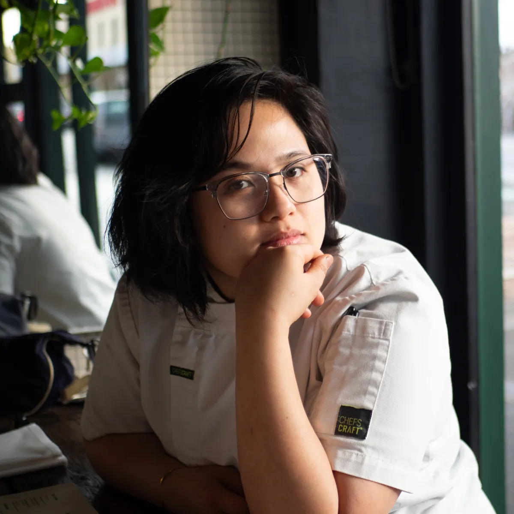

What is Cubo
Private dining, wilderness feasts, bespoke gatherings and events from Melbourne.
A simple space that brings people together.
Inspired by the spirit of the kubo, the simple Filipino hut close to nature and the rhythms of everyday life, Cubo is built around the idea that food is never simply about what is on the plate.
We bring together Australian produce, seasonal landscapes and local producers with the traditions, techniques, flavours and stories of Asia. Through private dining, wilderness feasts, bespoke gatherings and events, each menu responds to its surroundings, the season and the people gathered around the table.
Cubo is not about recreating tradition or simply combining cuisines. It is about learning from each tradition with respect, and finding new expressions of food while honouring where they come from.



Meet Michelle
Cooking at the meeting point of two worlds.
Michelle is the chef behind Cubo, guided by a simple belief: that food brings us closer to nature, culture and one another. Her cooking sits where Australian produce and Asian heritage meet, led by the season, shaped by fire and always in conversation with the people at the table.
Through private dining, wilderness feasts and consulting, she is building a practice rooted in respect for origin, resourcefulness in the kitchen and warm hospitality.
Get in touchWhat we believe
Seasonal & Local
We begin with the natural character of Australia: its landscapes, seasons, producers and produce. Nature sets the rhythm, allowing the land and what it offers to guide what we cook.
Asian Heritage
We draw from the diverse culinary traditions of Asia: its flavours, techniques, ingredients and ways of gathering. These traditions are a source of knowledge and inspiration, approached with curiosity and respect. Other kitchens and cultures find their way in too, always as guests at the table, never as decoration.
Nature & Culture
Cubo is a meeting of cultures rather than a simple fusion of cuisines. We believe food can bring us closer to nature, culture and one another, and every Cubo experience is an opportunity to discover, share and connect through the table.
No Waste
We follow the rhythms of nature, cooking with ingredients when they are abundant and at their best. Through preservation, fermentation and thoughtful use, we extend their life, minimise waste and discover new expressions of flavour.
Let’s gather around the table.
Tell us about your occasion, your guests and the season. We’ll shape something around it.
Plan your gathering